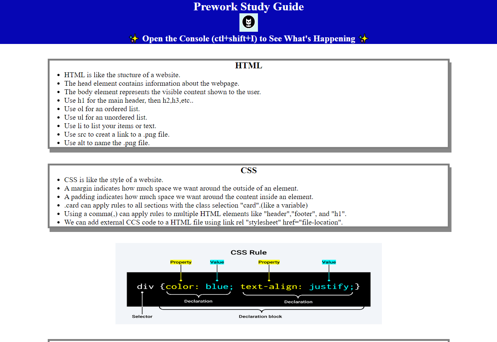
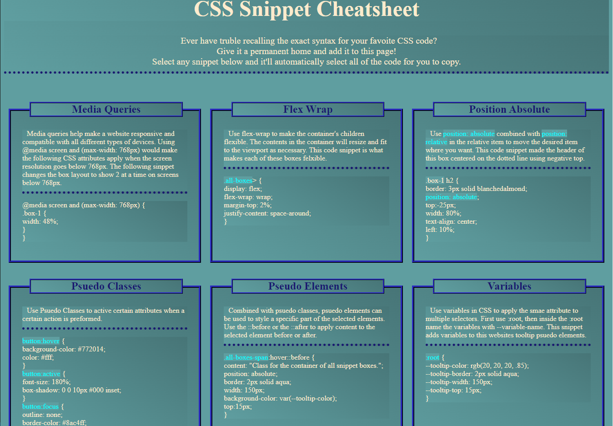

My Portfolio
About Me
Christopher Giordano
I am a bootcamp student learning to code for my first time. I currently work as a CNC machinist at Chemglass Machine, but I am looking for a career change. I want to learn how to develope websites, software, and/or games on my coding journey. I have many hobbies which include gaming, table-top gaming, piano, chicken farming, fantasy football, watching anime, smoking meat/cooking, and now coding of course. I am excited to see where coding can take my career and how I will evolve as a person learning these new skills.
Projects
Code Refactor
I was given started code for this project and I was given the task of refactoring the code. I stared by adding HTML elements where the div tags were. I also consolidated the CSS stylesheet into smaller groups for oranization purposes.
Prework Study Guide
I worked on this project as my first website and was given a starting template. I added in extra notes into the boxes for each section and also added in an image of the CSS rule.
CSS Snippet Cheatsheet
I started this website from scratch and added all the code myself. I made a wireframe first then implemented the wireframe to the website throught HTML and CSS. I made 6 different code snippets with decriptions and made the snippets able to be copied and pasted if the users wishes.